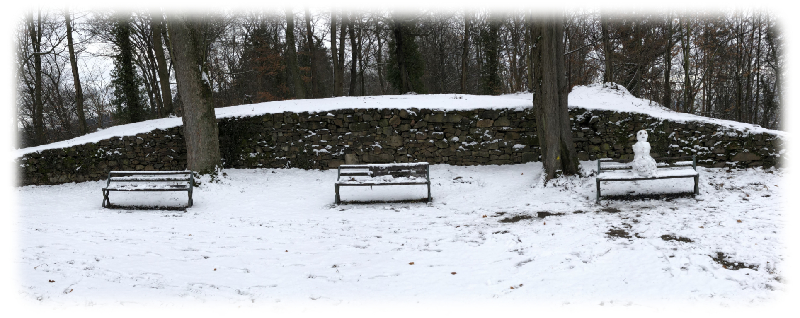
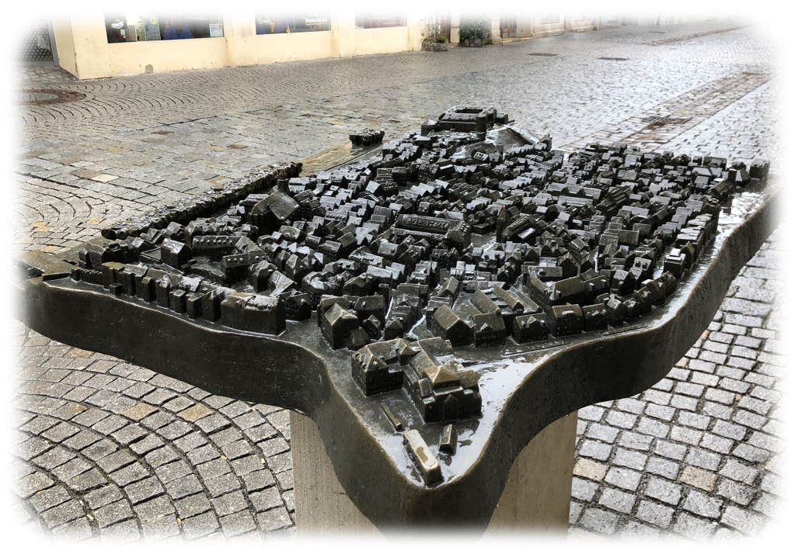
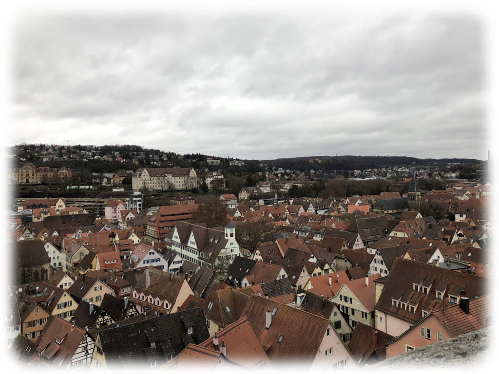
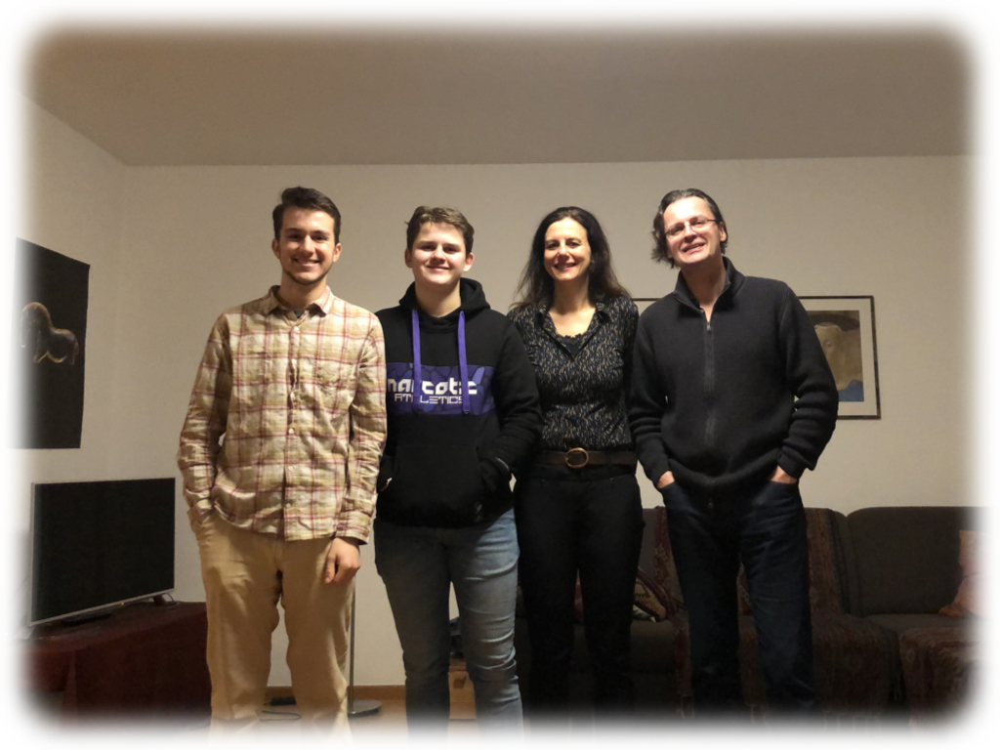

Erinnerungen
January 23, 2019
Escape Routes
Winter comes fast in Freiburg, and it hits like a bear. The city was blanketed in just two days, and it could be a different place all together.

{kind=link}
{kind=link}
{kind=link}
But on the weekend, I took a day trip to Tübingen, a college town half the size of Freiburg and two hours away. The reason for the trip is a story unto itself — my parents and I met a German family on vacation in California a decade ago, and we saw them annualy for the next five years thereafter. Somewhere along the line they wrote down an email on an old piece of card stock, and after five more years, right as I was leaving for Germany, I tracked that card down. It took us a while to work out a date, but in the end, I found myself on a bus driving through a snowstorm in the Black Forest, heading for a family I hadn’t seen in years.
Tag der Offenen Tür
I sat down with Julia, Bernhard, and their son Samuel for a traditional German brunch before heading out with just Samuel to explore the town. I found Tübingen to be a smaller, slightly more industrial version of Freiburg. The rain came in bits and pieces, more spitting than drizzling, and it gave the streets a gloom reminiscent of detective novels and late city nights.
{kind=link}
{kind=link}
We took a roundabout route, seeing first the plaza where some of the markets are held (right). Near that plaza is a museum, and I’m convinced I saw the best exhibit, even though I didn’t go inside. This is a map of Tübingen — or at least the center — including the castle at the far end. Every street and many of the important buildings are labeled in Braille. It’s a remarkable sight.

{kind=link}
{kind=link}
{kind=link}
Through a tunnel and over a river — the same river, as it happens, that runs through Heidelberg. Then into a restaurant right on the river’s edge for Maultaschen, a delicious ravioli-esque dish that has a fantastic name — Maul, a word for mouth that’s normally only used for animals, and Tasche, meaning bag. Mouth bags! As a popular story goes, they were originally created by monks to eat during Lent, because the dough hides the meat inside from God. I didn’t need any such excuse to eat too many.
Our final stop was that castle. Inside is a remarkably expensive art museum, but just like the first one, there was a remarkable sight outside, too — the city itself.

{kind=link}
A Quiet Return
And then it was time to go. Samuel had English homework and had to stay home (a remarkable thing — last time I saw him, he couldn’t speak a word of English, and now he’s more fluent in it than I’ll ever be in German), but Julia and Bernhard and I headed to the bus station, stopping by the university where Bernhard works (picture not representative of the exact location — Bernhard, along with quite a few others, hates the modern look of most of the other university buildings, unlike this one).

{kind=link}
{kind=link}
Now I’m back. As a side note, I finished a short story in my spare time, and I’m hoping to wrte more soon. And of course, there’s only two more weekends left before I head out on the big finale of a trip up north. It’s crazy how fast the time is racing.
You don’t know where I’m going
And you don’t know I’ve been
But when you hear the angels singing
I’ll be comin’ round again
Houndmouth, Comin’ Round Again